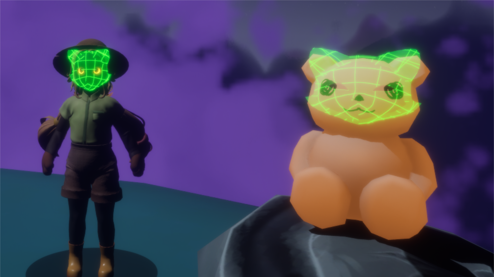
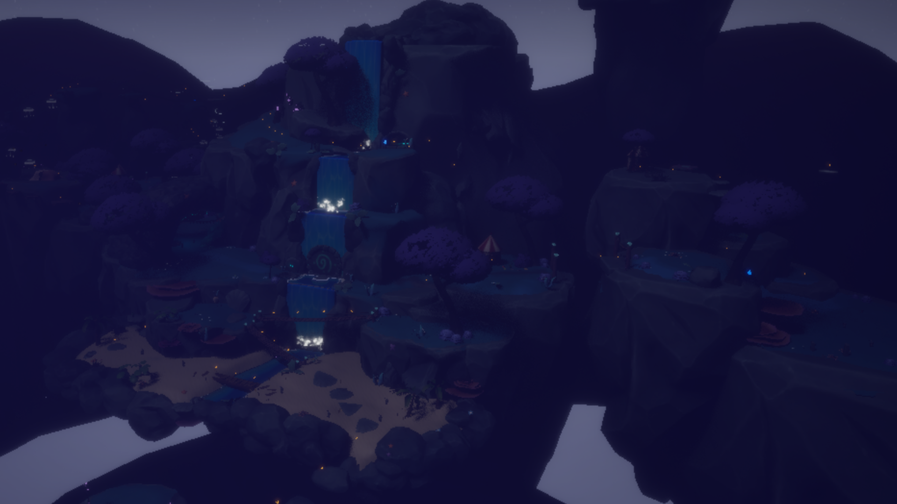
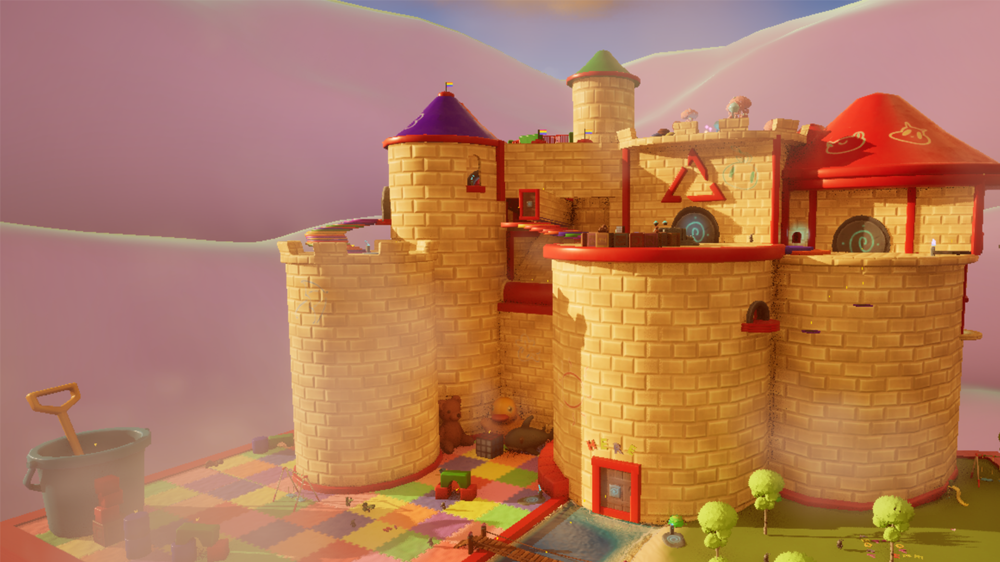
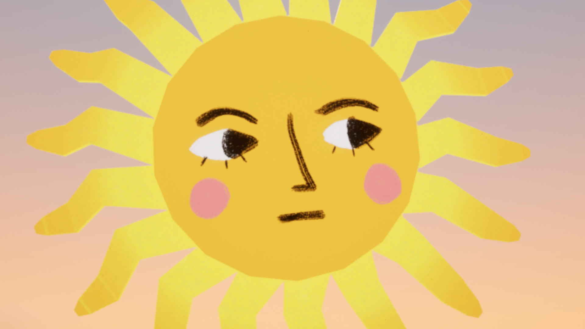
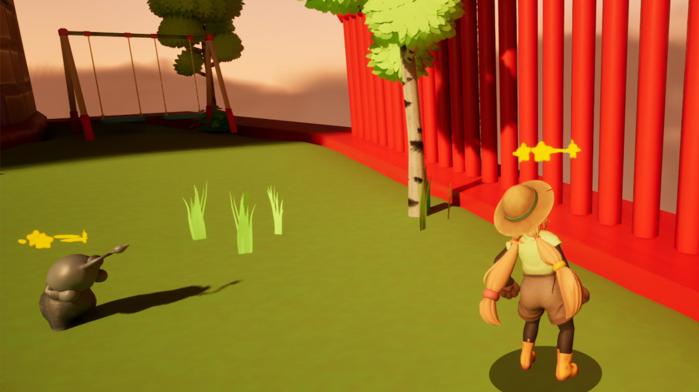
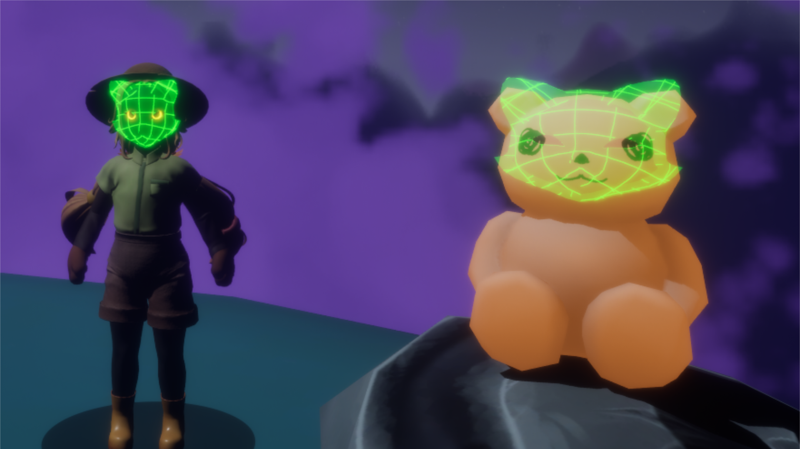
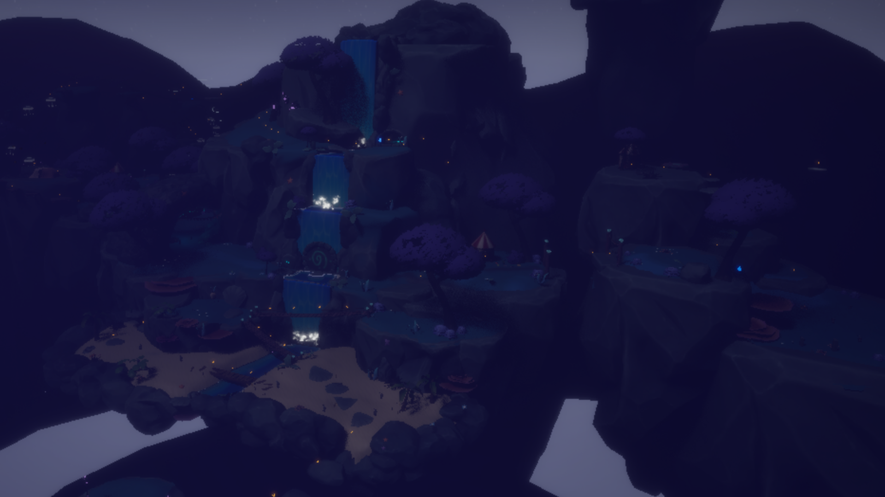
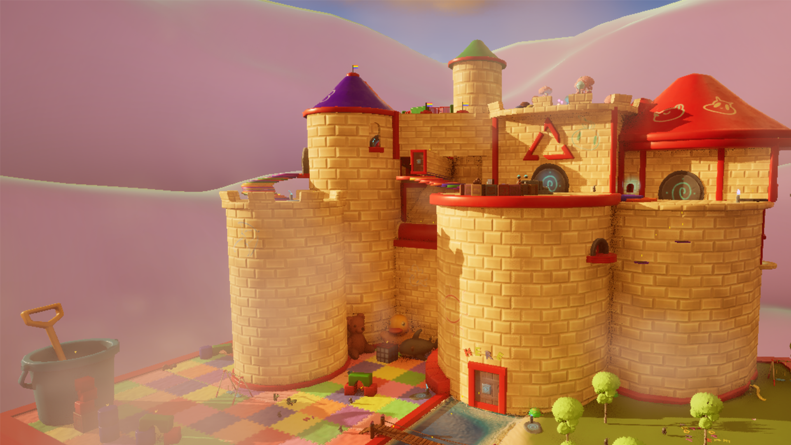
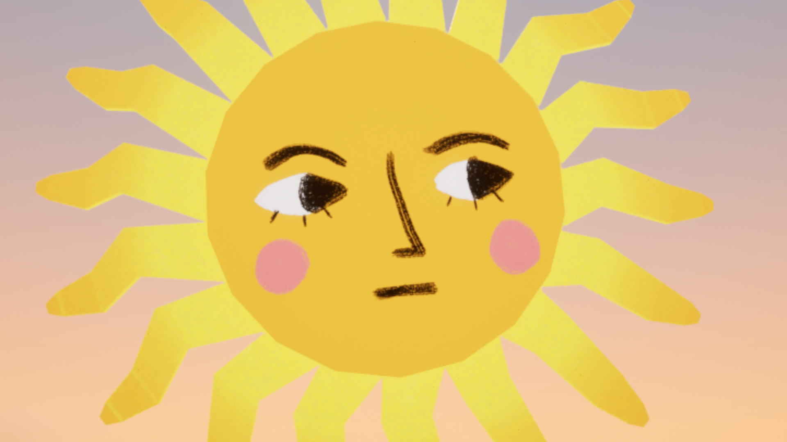
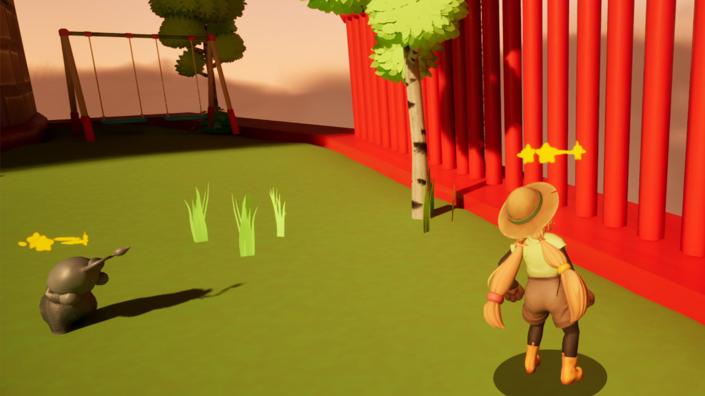

Project Overview
Trouble in Loomie Land is a Third-person 3D Platformer where you play as Friend, a keeper of childrens' dreams. Your mission is to collect dream catchers and return the gloomie loomies into their happy selves. For this project I wanted to practice a more rigid workflow and taking ownership more seriously. I focused heavily on prototyping and iterating in close communication with our programmers in order to ensure the best results and I think we did a good job. I also delved deeper into the Unreal Engine rabbit hole with notified, multiplayer replication & saving variables across levels.
My Contribution
For this project I spent more time communicating with our programmers and working with classes and systems they made, such as the game's Epic Online Systems integration and the movement mechanics. I also spent a lot of time prototyping and finally implementing said systems.
Fishing
The biggest player mechanic I built for Loomie Land was the ability for the player to fish using their fishing rod. This has three different usages: to fish up power-ups, to interact with levers from a distance and to (in multiplayer) pull the other player towards you. The system is split up into three parts:
Fish is not incredibly complex on its own but in order to prevent the player from fiddling too much with swapping abilities in the middle of fishing I set up some extra checks. As well as preparing the aiming mode.
The Fishing preview was a fun challenge to get right. It too is split into three distinct parts, the first is giving a better angle from which to aim. We did this by placing an invisible component on the character and lerping the camera position from its original position to this invisible component when the aim key is held. We also enabled "Orient Rotation to movement" in the character movement making the character turn with the mouse which we did not want them to do normally, but while aiming it adds both immersion and eases the aiming slightly. For further feedback the reach of the throw also lerps together with the camera moving making it feel really smooth.
The second part of the fishing preview is the preview itself, which attempts to predict a projectile path with strength, radius and gravity all being exposed to us in design to fiddle with. Then a whole bunch of variables are passed along for different purposes. The main one being the trace spawning, which is just a for each loop which spawns a whole bunch of blue balls with varying opacity and color or moves them if they already exist in the world. Similar code is ran for the ring at the end of the preview seen in the GIF above. The effect part of the fishing rod is way less interesting. Using an interface we trigger an event on the hit actor who can then have the effect coded in its blueprint without cluttering the player with more code.
User Interface
Most of the in-game UI is shown here. The most prominent one is the Radial Menu for picking power-ups which has a couple of neat design features. The menu features animated icons and text explaining what the hoevered power is and how to use it. The icons will also change depending on if the ability is unlocked or not.
The title screen in itself may not be very special but all of the menu-switching are animated using a custom macro which can be found below. This macro made it so that the animation could be done seamless without custom-animating each widget, button etc. which was very productive. Another challenge with this screen was having the animated background sequence play, I had never done anything like it so I had to learn about playlists and media rendering in Unreal which was quite interesting. Sadly I did not manage to compress the videos so they contribute quite a lot to the file-size of the final game, but it looks pretty good so that I am happy with.
Next up is the glide timer. The video is taken from early in development but we decided early that it was true and tested and made for a clear visualisation of what was going on. Early in development we were thinking about also having running in the game which also would've drained the bar, but we scrapped it. So for now, just enjoy the stamina wheel which one of our artists thought was inspired by Super Mario 64 and ended up becoming an inside joke for the rest of the project.
Final tidbit about my UI contribution; this lil' butterfly animation and the [ICON] collected popping in. Its final version is shown in the comprehensive video above, but the animations were added by me to give more feedback to the player that they are collecting something and that dopamine should be dispensed!
Multiplayer
While most of the multiplayer support was done by our programmers in C++, I did practice and assist in teaching myself and the other designers about how to do replication in Unreal Engine 5 using blueprints. I also helped set up the Implementation in the start menu.
Implementing a synced UI in multiplayer was a bit of a hassle as all the code for UI is cosmetic and client-side but we wanted to sync animations & the amount of collectibles. We eventually sorted it out by utilising the Game Instance to have one central class for storing these events and client-calls.

 








